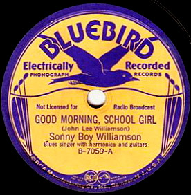

Всего 30 вариантов исполнения одной старинной песенки про одну маленькую школьницу!
Нажав на планке плеера (вверху страницы) на крайний справа значок, вы получите полное меню.
Разумеется, предоставляется в чисто познавательных целях. Сомнительно, что прослушивание музыки в таком виртуальном качестве может доставить реальное удовольствие.
